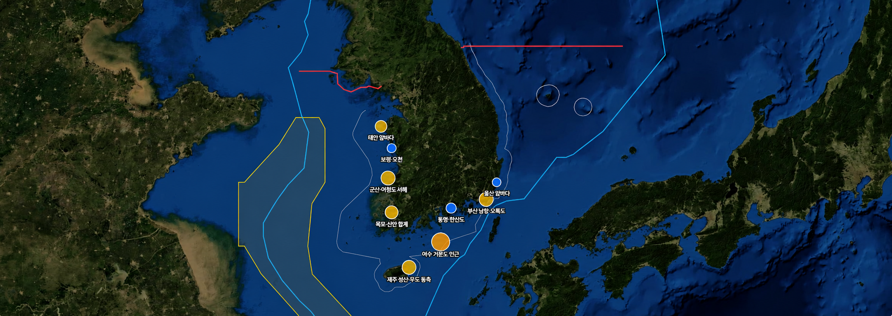

익수자 분석
29:54
어현상 (경위)
시스템 관리자 · ID/PW
익수자분석
2025 해상조난사고 4,636건 위치 분석 · 계절별 사고 다발 · 인명피해 집중 해역
요약 (2025년 연간)
총 사고
4,636
좌표 유효 4,625
구조
26,394
2025년 누계
사망
52
인명피해
실종
20
수색 대상
위험 해역 분포
기간: 전체 · 해양 기간 전체 사고 4,636건. 원 크기 · 색상 = 위험도(건수 · 인명피해), 마커/표 클릭 시 해당 해역으로 이동.

위험도
80+ 심각
60+ 높음
40+ 주의
<40 관심
사고 다발 · 치명 해역 (전체)
해역 (클릭 → 지도 이동)
| 해역 | 건수 | 사망 | 실종 | 위험도 |
|---|---|---|---|---|
| 여수 거문도 인근 치명 | 3 | 7 | 3 | 76 |
| 제주 성산 · 우도 동측 복합 | 49 | 4 | 0 | 57 |
| 부산 남항 · 오륙도 다발 | 113 | 0 | 0 | 57 |
| 군산 · 어청도 서해 치명 | 17 | 3 | 4 | 57 |
| 목포 · 신안 합계 다발 | 104 | 0 | 0 | 52 |
| 태안 앞바다 복합 | 28 | 4 | 0 | 46 |
| 통영 · 한산도 다발 | 77 | 0 | 0 | 39 |
| 보령 · 오천 복합 | 34 | 2 | 0 | 33 |
| 울산 앞바다 다발 | 63 | 0 | 0 | 32 |
치명 핫스팟(여수 거문도 · 제주 성산 · 태안 · 군산 어청도)은 드론 자동수색 경로계획의 효과를 우선적으로 활용한다. 사망사고는 계절에 집중되는 경향.